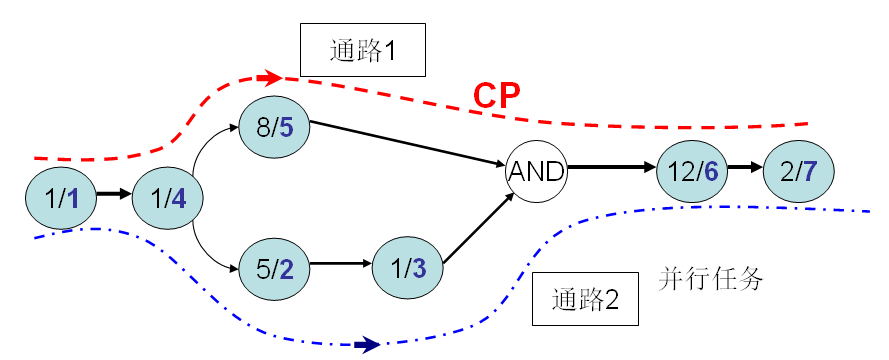

返回主页
《关键路径法》图-3（CPM）

按箭头方向，从起点到终点的连续的路径就叫“通路”。在上图中，有两条通路。
通路[1]所需要的时间：1+1+8+12+2=24分钟；
通路[2]所需要的时间：1+1+5+1+12+2=22分钟。
如果是AND关系，关键路径（Critical Path）是从起点到终点花费时间最多的一条路径。
如果是OR关系，关键路径（Critical Path）是从起点到终点花费时间最少的一条路径。
根据上面的定义，通路[1]就是关键路径（CP），通路[1]所需要的时间24分钟就是完成任务需要的总时间。习惯上，把关键路径都标成红色。
version:1.0; jobnet@188.com © retter2012.com